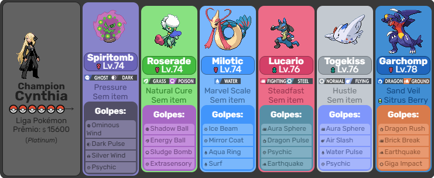
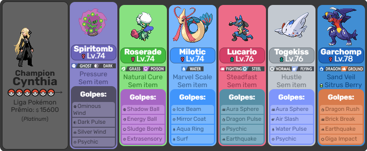

Cynthia é a grande Campeã da Liga Pokémon da região de Sinnoh, tendo conquistado o título em algum momento antes dos eventos das versões Diamond e Pearl e seus remakes. É uma especialista em Pokémon do tipo (Dragão).
Ela é também uma pesquisadora Pokémon, viajando pelas mais diversas regiões em busca de novos conhecimentos acerca de mitologia, lendas e culturas diferentes.
 

O time de Cynthia é composto por uma variedade de Pokémon, incluindo alguns dos mais poderosos da quarta geração, como Garchomp e Lucario. Seu time é conhecido por sua força e versatilidade, tornando Cynthia uma adversária formidável na Liga Pokémon.
Diantha é a campeã da Liga Pokémon da região de Kalos. Ela é uma atriz famosa e uma treinadora habilidosa, conhecida por sua elegância e carisma. Diantha é uma figura inspiradora para muitos treinadores, combinando sua paixão pela atuação com sua dedicação ao treinamento de Pokémon.


O time de Diantha é composto por uma variedade de Pokémon, incluindo alguns dos mais poderosos da sexta geração, como Gardevoir que pode mega evoluir e Tyrantrum. Seu time é conhecido por sua força e versatilidade, tornando Diantha uma adversária formidável na Liga Pokémon.